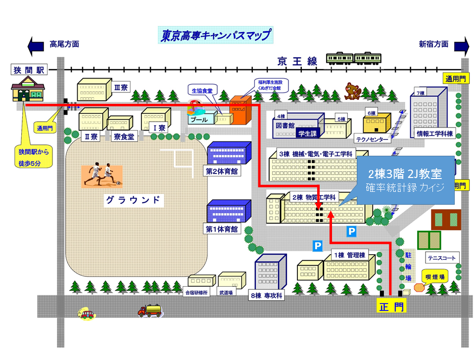

確率統計録 カイジとは？
トランプゲームはもちろん、プログラムで作られたルーレットも！
ポイントを使ってゲームをプレイし、そのポイントを増やしていくのがここのルール。一攫千金を目指してランキングにその名を刻め！
見どころ
1つはデータベースによるポイント管理、2つはQRコードによるアカウント認証、3つはプログラムで作られたルーレットです。
Staffに記載していますが、技術班の彼らが必死に頑張ってくれ、このシステムが実現しました。それ故、この見どころには是非目を向けていただけると幸いです。
まず、当アトラクションでプレイする際、お客様一人一人にQRコードを発行致します。これが、お客様個人の認証材料となり、ゲームをプレイする際に個人認識に必要な媒体となります。そして、そのQRコードを通したデータは当アトラクションで運営するデータベースに蓄積されます。ここからお客様の個人プレイデータを引き出したり、保存したりします。
また、当アトラクションの最大の見どころといっても差し支えないルーレットですが、これはUnityによって作られたものをプロジェクターで投影しています。UIもすべて技術班が自作してくれました。
このように、当アトラクションは見ていて飽きない見どころが満載です。是非、いろんなところに目を向けて見てください。
BlackJack
DETAIL
スタッフとの対戦式で、お互いカードを2枚引いた状態で始まります。この時、スタッフのカードは1枚表になっており、そのカードを参考にしてプレイを進めることが可能です。
カードの数の計算ですが、2~10はそのままの数で、J,Q,Kはどれも10になります。また、Aは1もしくは11となり自分に有利な数字を選択できます。
手持ちのカードでは勝負できないと判断し、カードをさらに引きたい場合は「ヒット」を宣言してください。カードをもう1枚引くことができます。この際、21を超えて「バスト」にならないように気をつけてください。「バスト」を起こすと負けが確定します。また、もうカードはいらないと判断した場合は「スタンド」を宣言してください。手持ちのカードで勝負に挑みます。
特別ルールですが、「スプリット」と「ダブルダウン」というものがあります。こちらは上級者向けですので任意で選択できるようにしています。「スプリット」は最初の手札カードの2枚が同じ値の数の時に選択可能です。最初に支払ったポイントと同じポイントを支払うことが出来ます。余分に支払ったポイントだけ、勝ちの時の取り分が増えます。「ダブルダウン」は自分の手札を確認後に選択可能で、1枚のみの強制的な「ヒット」の代わりに、最初に支払ったポイントの2倍を支払うことができます。
ゲームに勝利するとプレイに支払ったポイントの2倍を獲得でき、引き分けると1倍、負けると没収となります。
Poker
DETAILS
スタッフとの対戦式で、初めに5枚の手札が互いに配られます。この時、手札の配役を揃えるために手札の交換を1度だけすることができます。もちろん、しないこともできます。
この交換が終わると、手札の公開となります。
また、配役の強さですが、弱い順に役なしの「ブタ」、同じ数字のペアが1つある「ワンペア」、2つある「ツーペア」、同じ数字が3つある「スリーカード」、5,6,7,8,9のように数字が続く「ストレート」、全て同じスート（記号）で揃えられた「フラッシュ」、スリーカードとワンペアの組み合わせである「フルハウス」、同じ数字が4枚ある「フォーカード」、数字が続き、なおかつ全て同じスート（記号）の「ストレートフラッシュ」、ストレートフラッシュで数字が10,J,Q,K,Aの「ロイヤルストレートフラッシュ」です。同じ役での勝負の時は強い役を構成するカードで高い方が勝利するという「ハイカード」での勝負になります。
スタッフに勝利すれば最初に支払ったポイントの2倍が、引き分けると1倍が獲得できます。負けると没収です。
Roulette
DETAIL
予測型のゲームで、スクリーンに映されるルーレットの出目を予測します。ルーレットの出目は乱数を利用し公平な出目となるようにしています。ポイントの支払い方ですが、多様な払い方がございます。的中すると支払ったポイントの36倍が獲得できる「1点払い」、これは払いたい番号を選んで何個でも払うことが出来ますが、「列払い」や「行払い」の方が効率がいいのと、0と00があるので全ての番号に払い続けていても引き分け続けることは出来ないことに注意してください。その他の払い方は「列払い」、列で3個の番号にまとめて支払うことが出来ます。的中すると支払ったポイントの12倍を獲得できます。「行払い」、行で12個の番号にまとめて支払うことが出来ます。的中すると支払ったポイントの3倍を獲得できます。0や00は「1点払い」でしか支払うことが出来ません。「2点払い」や「3点払い」、「5点払い」などはスタッフが対応できないので「1点払い」の複数払いで対応してください。
Near-9
DETAIL
予測型のゲームで、スクリーンに映されるゲーム画面で「バンカー」と「プレイヤー」と呼ばれるこのゲームのプレイヤーのどちらが勝つかを予測します。また「タイ」と呼ばれる引き分けに予測することもできます。
「バンカー」や「プレイヤー」が行っているゲームのルールを知らなくともこのゲームで遊ぶことは出来ますが、簡単にいえば、手札の下一桁（一の位）を9に近づけるゲームです。初めに互いに手札が2枚配られ、まずはそのカードの数を確認します。この時、A~9はそのままの数で数え、10~Kは0として数えます。また、下一桁を数えるため、繰り上がりは考慮しません。12なら2として数えます。そして、この時点で「どちらかでも」手札が8,9に達していたらその時点でゲームが終了します。また、この時点で「どちらも」手札が6か7に達していたらこれまたこの時点でゲームが終了します。それ以外の場合（「プレイヤー」の手札が5点以下が条件）は「プレイヤー」が3枚目のカードを引きます。「バンカー」はめんどくさい条件があるのですがあまりにもめんどくさいので、ここでは割愛します。プレイヤーの3枚目のカードによって引いたり引かなかったりします。しかし、当然引くべきと思える時でも引かなかったり、引かない方がいい時でも引いたりすることがあります。そこだけはご注意ください。
「バンカー」、「プレイヤー」の勝敗が的中すると2倍、「タイ」に的中すると8倍獲得出来ます。失敗すると没収です。
ACCESS
STAFF
総指揮
- 山田慧
技術
- 小林隆仁
- 木岡拓海
- 川口博晶
- 木下祥太朗